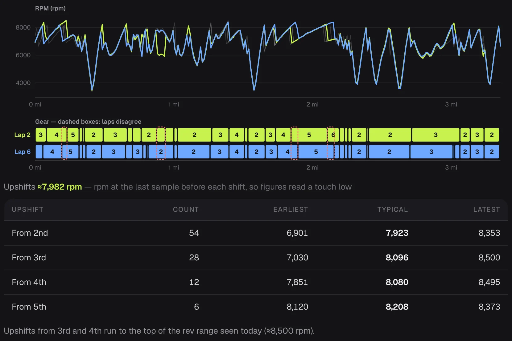

When to shift on track
Shifting looks like the simplest part of a lap, and it hides a surprising amount of time and mechanical sympathy. The questions are when to change up, when to change up early on purpose, where never to change at all, and how to come down the gears without unsettling the car.
When to change up
The aim is to keep the most drive at the wheels. Change up at the point where the next gear, at the revs you will land on, pulls at least as hard as the gear you are in.
- For most naturally aspirated engines, that is at or close to the redline. Power is still high at the top, and the next gear drops the revs back into the strongest part of the range.
- For many turbocharged engines, power falls away before the redline, and changing up a little sooner is quicker. So is it for an engine that is simply out of breath at the top.
- Not on the limiter. Bouncing off the rev limiter is slower than changing up, and it is not kind to the engine.
If you do not know your engine's power curve, your own data will tell you: on a long straight, compare a lap where you changed at the redline with one where you changed a few hundred revs earlier, and look at the speed at the braking point.
When to short-shift
Changing up early, before the best point, costs a little acceleration. It is worth it when:
- The shift would otherwise land mid-corner. Change up before the corner and carry the higher gear through.
- The car is struggling for traction on the way out of a slow corner. A higher gear sends less torque to the wheels and can be the quicker way out.
- A short straight would need a shift up and straight back down. Holding one gear and using more of the rev range is often faster than two shifts.
- The car is hot or you are on a cool-down lap.
Where not to shift
Every shift briefly interrupts drive and shifts the car's weight. At the limit of grip in a corner, that is enough to start a slide. Do your shifting in a straight line: up before turn-in or after the car is straight again, down while braking before the corner.
Coming down the gears
- Brake first, then downshift. The brakes slow the car; the gearbox only chooses the gear for the exit. Using engine braking to slow down wears the driveline and upsets the balance.
- Downshift late in the braking zone, once the speed has come down enough for the lower gear.
- Match the revs. In a manual without automatic rev-matching, a blip of throttle as the clutch comes up stops the driven wheels from being dragged by the engine, which can lock them for an instant.
- Never downshift into a gear that is too low for your speed. The engine is forced past its redline no matter what the limiter does. This is the mistake that breaks engines; when in doubt, wait.
- Be in the right gear before you turn in.
Which gear for a corner
If two gears both work, the higher one is usually the calmer choice: the throttle is gentler, the car is easier to balance, and there is one fewer shift to make. The lower gear is right when the corner leads onto a long straight and the car can use the extra drive without spinning its wheels. Try both and compare the speed at the end of the following straight.
Gears and shift points in Track Evolution
When an imported recording carries the car's gear and engine speed — a Corvette or Cadillac PDR video, for example — the session's Traces tab adds a gear ribbon under the RPM graph: one band per selected lap, one block per gear with its number, and a gap where the clutch was in. With two or more laps selected, the stretches where they were in different gears are outlined, so "third on my best lap, fourth on this one" is visible at a glance.
Beside it, a shift points table gives the engine speed you changed up at from each gear across the session — earliest, typical and latest — with a note when a gear is taken to the top of the day's rev range, or left noticeably earlier than the others. Your typical upshift RPM also appears in the session's stats.

The app reports what you did and leaves the judgment to you: whether 7,000 rpm is the right place to change depends on the engine. The gear ribbon and shift table are on the web and in the phone apps, as part of Track Evolution Pro.